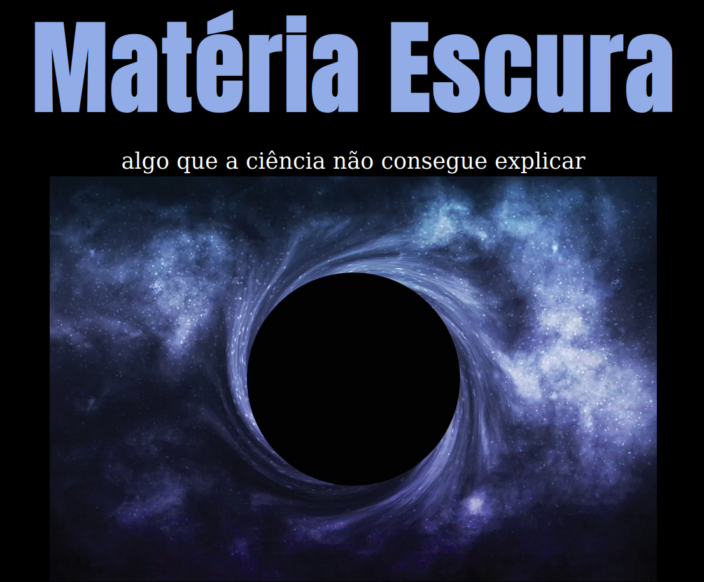
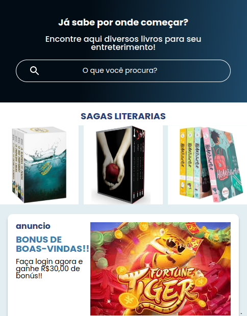
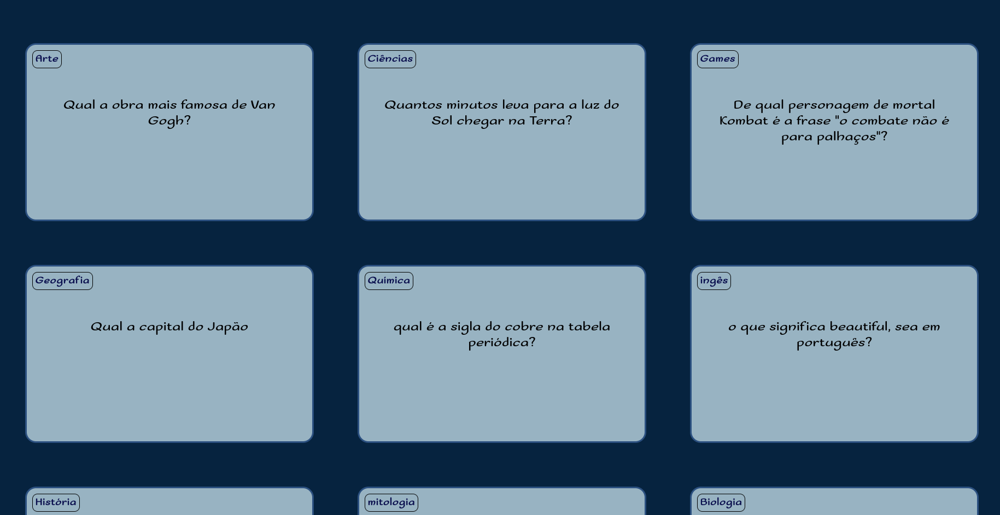

Nossos projetos

Nosso primeiro site: Um pouco sobre matéria escura.
Este projeto é uma página web que apresenta uma breve explicação sobre a metéria escura. A página usa fontes externas do Google Fonts.

Site para compra de livros
Este projeto é uma plataforma para compra de livros online. O site segue o modelo do alurabooks.

Flashcards
Neste projeto fizemos flashcards com perguntas e respostas de conhecimento gerais.